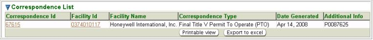

The system’s second-level menu, Correspondence Search,
of the
Tools
tab
allows you to search for correspondence that has been sent to a
facility(s). This includes not only letters but also permit documents
and invoices.
You may search for correspondence on the basis of any or all
of the
criteria listed below. You can fill in or choose a value for whichever
fields you want to use to restrict your search.
Facility ID: enter a
FAC ID or a partial FAC ID and * or % in any position as a wildcard
(example: 012*, %012504, or *0125*, etc.) to filter for compliance
reports for an individual facility or group of facilities.
Facility Name: enter the whole name or a
partial name and *
or % in any position
as a wildcard (example: An*, %Anh or
*Anh*, etc.) to filter for
compliance reports for an individual facility or group of facilities.
Correspondence Type: select from a pick
list of
correspondence type
values: for example Draft
Title V Permit To Install or Invoice – Title
V Emissions Fee.
Additional Info: allows you to narrow
down the
search based on additional information identified for a specific Correspondence Type;
for example, when selecting Draft Title V Permit
To Install you could enter the permit number.
After you complete the criteria for the search you want, and
click on ,
the system searches all of the records for all the correspondence
stored in its database, selects the ones that meet ALL
of the criteria
you have specified, and returns summary information about that
correspondence in a datagrid. The datagrid below is the result of a
search submitted with search criteria specified to select all Final
Title V Permit To Operate (PTO) for Facility ID 0374010117.

Correspondence Search Results Datagrid
The summary data returned includes columns providing
Correspondence
ID,
Facility ID, Facility Name, Correspondence Type, Date Generated
and
Additional
Info for all the correspondence that matches your search
criteria. The following summary data is further explained:
Correspondence ID: the ID number that
the system assigned
to the
individual correspondence record. You can choose to view/edit a
specific correspondence by clicking the associated Correspondence ID
hyperlink found in the datagrid. This will open the Correspondence
Detail page where you can edit the Additional Info
or enter dates
relevant to the tracking or receipt of the correspondence. To update or
change information, click Edit
then click Save
to complete the
update/change or Cancel
to abort the process.
Facility ID: the unique ID number
assigned to the facility.
The Facility
Id is a hyperlink for accessing the associated Facility
Profile.
This datagrid supports all the common functionality for
datagrids as described in the help page for Common User Interface
Elements - Datagrids